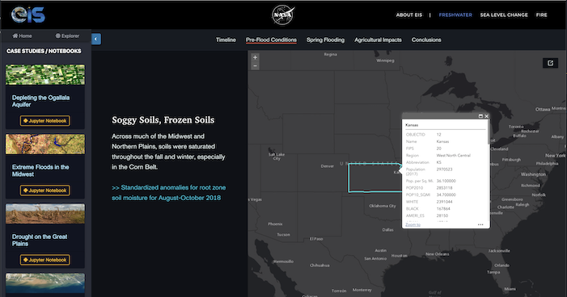

The History of
2018
In 2018, the 🌳 Multi-Mission Algorithm and Analysis Platform (MAAP) 🌳 launched.
MAAP supported above ground biomass estimation through:
- Data Discovery via the Common Metadata Repository (MAAP CMR) Catalog
- Data Processing via Hybrid Cloud Science Data System (HySDS)
- Data Exploration + Analysis via the Algorithm Development Environment (ADE)

2019
In 2019, the 🏛 EO Exploitation Platform Common Architecture (EOEPCA) 🏛 was introduced at ESA's Living Planet Symposium.
The EOEPCA intends to be a widely adopted reference architecture for the future exploitation of distributed EO data and services.
Core Components:
- Discovery + Access (Data Catalog)
- Applications (Notebooks)
- Processing

We need a federated network of resources and we need them to be 🧩 INTEROPERABLE 🧩.
EOEPCA identified the following core challenges of such a network:
- Users would need have federated access to different catalogs.
- Access, processing and visualization services must all provide interopable APIs.
2020
In 2020, in response to COVID, 🔺 NASA, ESA and JAXA 🔺 joined forces on the Trilateral Dashboard.
The dashboard was collaboration to analyze the changes in the global environment and socio-economic activities before and after the global epidemic using Earth observation satellite data from the three agencies.

Multiple dashboards, shared APIs
- The trilateral dashboard used data from all 3 agencies and a dynamic tiling API maintained by NASA.
- NASA developed a dashboard to provide customized map visualization, interactive charting and story telling.
- NASA's dashboard infrastructure was replicated by the MAAP team to support the CEOS Biomass Harmonization effort.

2021
In 2021, NASA piloted the 🧑🔬 Earth Information Systems (EIS) 📔 program.
- The EIS program funded scientists to answer critical questions about Earth's complex System of Systems.
- EIS demonstrated open science by linking its pilot studies to accessible notebooks.
- https://eis.smce.nasa.gov/about.html

2022
In 2022, NASA launched the 🌎 Visualization, Exploration, and Data Analysis (VEDA) 🌎 platform.
- Inspired by the success of the COVID-19 dashboard, VEDA was launched in 2022.
- The VEDA dashboard has 2 componets - VEDA UI and VEDA Config. The user interface (veda-ui) is configurable via a STAC catalog (veda-config).
- https://www.earthdata.nasa.gov/esds/veda
2023
In 2023, ⛽ Greenhouse Gas Center (GHG) Center ⛽ will launch.
- US government effort led by NASA in collaboration with EPA, NOAA, NIST and other agencies are collaborating to create a the Greenhouse Gas (GHG) Monitoring and Information Center.
- The mission of the GHG Monitoring and Information Center is to extend accessible and integrated GHG data and modeling capabilities from the U.S. Government and non-public sources for scalable impact.
- To deliver GHG Center, the VEDA team will create new instances of the VEDA Dashboard + STAC infrastructure to deliver the initial platform this summer.
2024
In 2024, VEDA will continue to develop as a community and an ecosystem of reusable tools which:
- Reduces the time to Earth insights.
- Reduces the time to reproducible science.
- How?
- Host workshops
- Host the VEDA Community Forum
- Share best practices for interopability, open source software and cloud-native services inside and outside of NASA.
- Host workshops
- Host the VEDA Community Forum
- Share best practices for interopability, open source software and cloud-native services inside and outside of NASA.